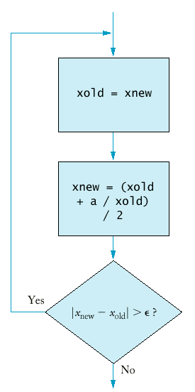
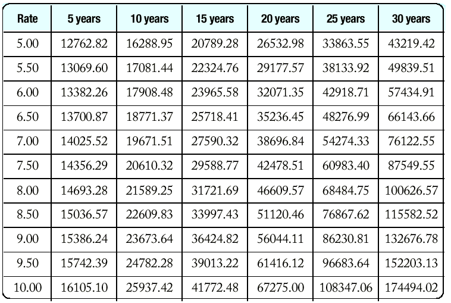

** Оператор за цикъл for
Най-често използваната форма на цикъл е:
i = start;За тази форма има специален оператор за цикъл:
while (i <= end)
{ . . .
i++;
}
for (i = start; i <= end; i++)Пример: Пресмятане на функцията факториел: n! = 1.2.3.4...n
// forfac.cppЦикъл с намаляване на променливата на цикъла.
#include <iostream>
using namespace std;
long forfac(int n)
{ long product = 1;
for (int i = 1; i <= n; i++) product = product * i;
return product;
}
int main()
{ cout << "Please enter a number: ";
int n;
cin >> n;
cout << n << "! = " << forfac(n) << "\n";
return 0;
}
for (int n = 10; n >= 0; n--) ...Нарастването или намаляването на стъпката на цикъла може да не е 1.
for (x = -10; x <= 10; x = x + 0.5) ...Възможно е да се сложат несвързани условия в цикъла.
for (rate = 6; month--; cout << balance) ...Безкраен цикъл.
for (;;) ...
** Оператор за цикъл do/while.
Понякога се иска да се изпълни тялото на цикъла най-малко един път
и след това да се провери теста за край на цикъла (след като
тялото е било изпълнено).
doПример: Древните гърци са използвали прост алгоритъм за пресмятане на корен квадратен:
{ statements
}
while (condition);
doАко един алгоритъм генерира безкрайна редица, то той се нарича итеративен алгоритъм.
{ xold = xnew;
xnew = (xold + a / xold) / 2;
}
while (fabs(xnew - xold) > EPSILON);// sqroot.cpp
#include <iostream> #include <cmath> using namespace std; int main() { cout << "Please enter a number: "; double a; cin >> a; const double EPSILON = 1E-14; double xnew = a; double xold; do { xold = xnew; xnew = (xold + a / xold) / 2; } while (fabs(xnew - xold) > EPSILON); cout << "The square root is " << xnew << "\n"; return 0; }
Таблицата показва съдбата на 10 хиляди щатски долара, инвестирани с различни лихвени проценти за различен брой години.
print table headerХедерът на таблицата също се получава е един цикъл:
double rate;
for (rate = RATE_MIN; rate <= RATE_MAX;
rate = rate + RATE_INCR)
{ print table row
}
cout << "Rate ";За отпечатване на един ред се използва още един цикъл - така получаваме вложен цикъл.
int year;
for (year = YEAR_MIN; year <= YEAR_MAX;
year = year + YEAR_INCR)
{ cout << setw(2) << year << " years";
}
// table.cpp
#include <iostream> #include <iomanip> #include <cmath>
using namespace std;
int main()
{ const double RATE_MIN = 5;
const double RATE_MAX = 10;
const double RATE_INCR = 0.5;
const int YEAR_MIN = 5;
const int YEAR_MAX = 30;
const int YEAR_INCR = 5;
/* print table header */
cout << " Rate ";
int year;
for (year = YEAR_MIN; year <= YEAR_MAX;
year = year + YEAR_INCR)
cout << setw(2) << year << " years ";
cout << "\n";
cout << fixed << setprecision(2);
double rate;
double initial_balance = 10000;
for (rate = RATE_MIN; rate <= RATE_MAX;
rate = rate + RATE_INCR)
{
/* print table row */
int year;
cout << setw(5) << rate;
for (year = YEAR_MIN; year <= YEAR_MAX;
year = year + YEAR_INCR)
{ double balance =
initial_balance * pow(1 + rate/100, year);
cout << setw(10) << balance;
}
cout << "\n";
}
return 0;
}
В някои случаи броят на итерациите (изпълнения на тялото на цикъла)
на вътрешния цикъл зависи от броячът на итерациите на външния цикъл.// words.cpp* Пренасочване на входа (cin)
#include <iostream> #include <string> using namespace std; int main() { int count = 0; string word; while (cin >> word) count++; cout << count << " words." << endl; return 0; }
string line;Пример:
while (getline(cin, line))
{ process line
}
char ch;Пример:
while (cin.get(ch))
{ process ch
}
int main()random.cpp
{ int i;
for (i = 1; i <= 10; i++)
{
int r = rand();
cout << r << "\n";
}
return 0;
}
За генериране на случайни цели числа в интервала [a, b] се използва следната функция:Time now;
int seed = now.seconds_from(Time(0,0,0));
srand(seed);
int rand_int(int a, int b)Пример: Зарове.
{
return a + rand() % (b - a + 1);
}
// dice.cppЗа генериране на случайни числа тип double в интервала [a, b]:
#include <iostream> #include <string> #include <cstdlib> #include <ctime> using namespace std; /** Sets the seed of the random number generator. */ void rand_seed() { int seed = static_cast<int>(time(0)); srand(seed); } /** Compute a random integer in a range @param a the bottom of the range @param b the top of the range @return a random integer x, a <= x and x <= b */ int rand_int(int a, int b) { return a + rand() % (b - a + 1); } int main() { rand_seed(); int i; for (i = 1; i <= 10; i++) { int d1 = rand_int(1, 6); int d2 = rand_int(1, 6); cout << d1 << " " << d2 << "\n"; } cout << "\n"; return 0; }
double rand_double(double a, double b)Пример: Иглата на Бюфон.
{
return a + (b - a) * rand() * (1.0 / RAND_MAX);
}
Хипотезата на Бюфон е, че отношението на броя на всички опити към броя на попаденията клони към числото pi.
void
rand_seed()
/* ЦЕЛ: Инициализира генератора за
случайни числа
*/
{ int seed =
static_cast<int>(time(0));
srand(seed);
}
double rand_double(double a, double
b)
/* ЦЕЛ: намира случайно число в
интервала [a, b]
ПОЛУЧАВА: границите на
интервала
ВРЪЩА: случайно число x,
a <= x и x <= b
*/
{ return a + (b -
a)*rand()*(1.0/RAND_MAX);
}
double deg2rad(double alpha)
/* ЦЕЛ: превръща градуси в
радиани
ПОЛУЧАВА: alpha -
големина на ъгъл в градуси
ВРЪЩА: големината
на ъгъла в радиани
*/
{ const double PI =
3.141592653589793;
return alpha * PI / 180;
}
int main()
{ int NTRIES = 10000;
int i;
int hits = 0;
rand_seed();
for (i = 1; i <=
NTRIES; i++)
{ double ylow =
rand_double(0, 2);
double
angle = rand_double(0, 180);
double
yhigh = ylow + sin(deg2rad(angle));
if
(yhigh >= 2) hits++;
}
cout << "Tries /
Hits = " << NTRIES*(1.0/hits) << "\n";
return 0;
}